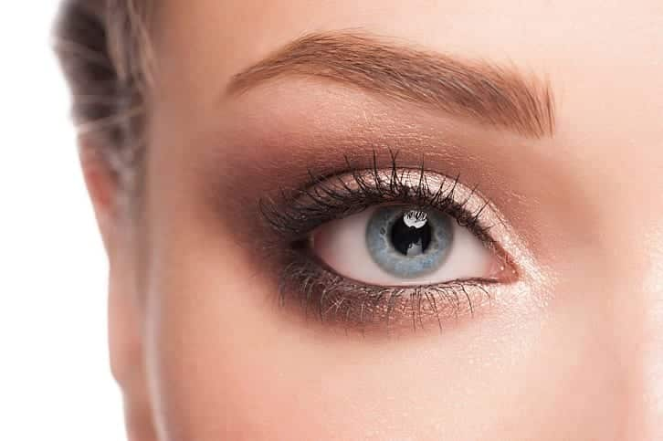
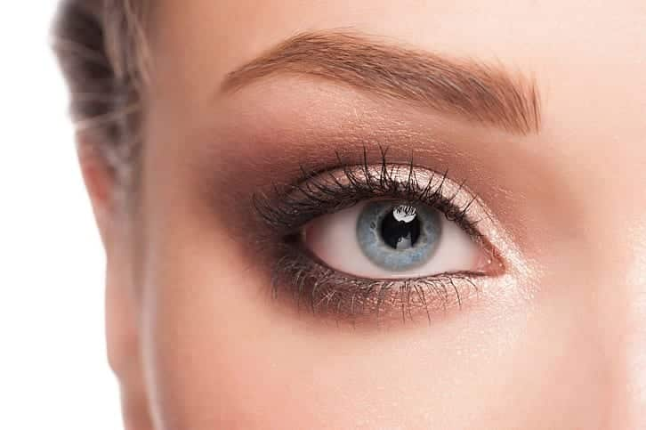

O primeiro passo para uma maquiagem perfeita é preparar a pele. Lave bem o rosto com um sabonete específico para seu tipo de pele, aplique um tônico e finalize com um hidratante. Essa preparação garante que a maquiagem dure mais tempo e tenha um acabamento mais bonito.
Aplique um primer de qualidade em todo o rosto. O primer ajuda a minimizar os poros, controla a oleosidade e cria uma superfície lisa para receber a base e outros produtos. Espalhe com movimentos suaves e espere alguns minutos para secar antes de seguir para o próximo passo.
Escolha uma base que combine perfeitamente com o tom da sua pele. Use um pincel, esponja ou as pontas dos dedos para aplicar de maneira uniforme, começando pelo centro do rosto e espalhando para as extremidades. Lembre-se de também passar um pouco no pescoço para um efeito mais natural.
Corrija pequenas imperfeições com um corretivo. Use-o abaixo dos olhos para iluminar o olhar e sobre manchas ou espinhas para uniformizar o tom da pele. Dê batidinhas leves com a ponta dos dedos ou com uma esponjinha para que o produto se misture bem com a base.
Realce os olhos com sombras, delineador e máscara de cílios. Comece com uma sombra neutra na pálpebra, depois use tons mais escuros no côncavo para dar profundidade. Finalize com delineado e várias camadas de máscara para abrir o olhar e dar volume aos cílios.
Finalize a maquiagem aplicando blush nas maçãs do rosto, iluminador nos pontos altos (topo das maçãs, ponta do nariz e arco do cupido) e um batom de sua preferência. Use um spray fixador para garantir que a make permaneça impecável durante todo o dia ou evento.